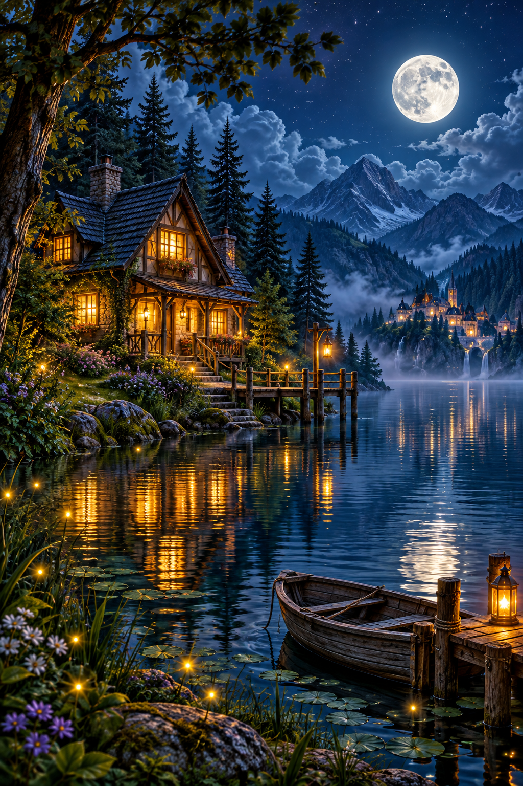
01 · Домик у озера
Ночь · озеро · дом
Нижний ряд — концепты для утверждения. Уровни 7–12 пока не добавлены в игру.

Ночь · озеро · дом
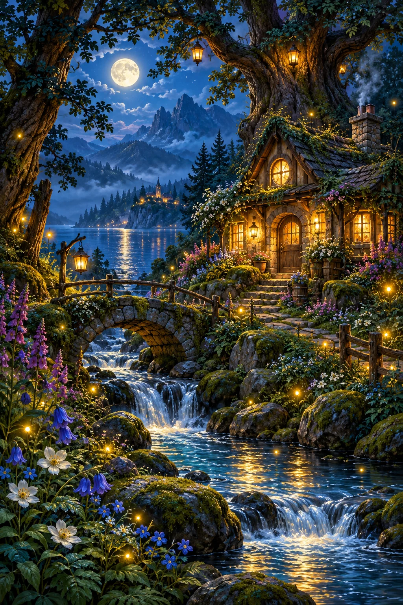
Ночь · лес · ручей
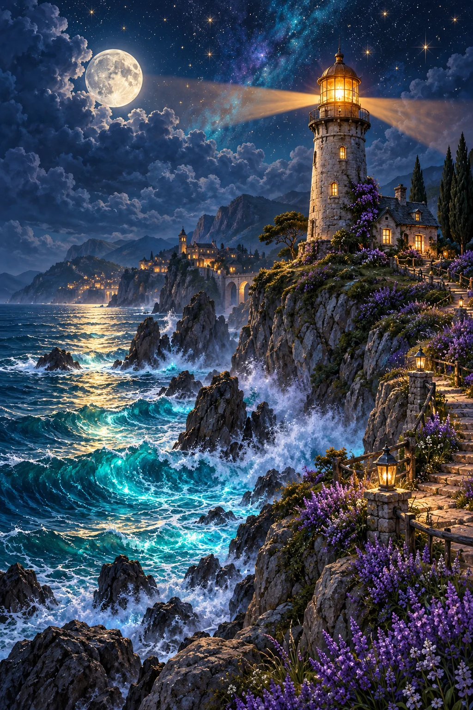
Ночь · море · маяк
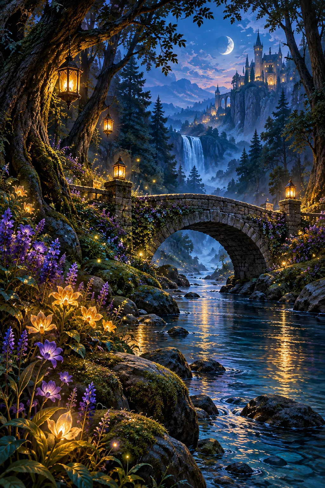
Сумерки · мост · река
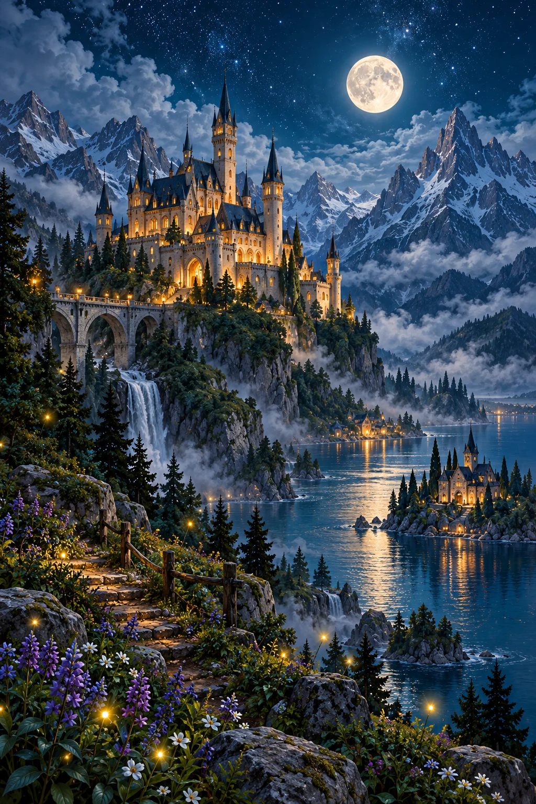
Ночь · горы · замок
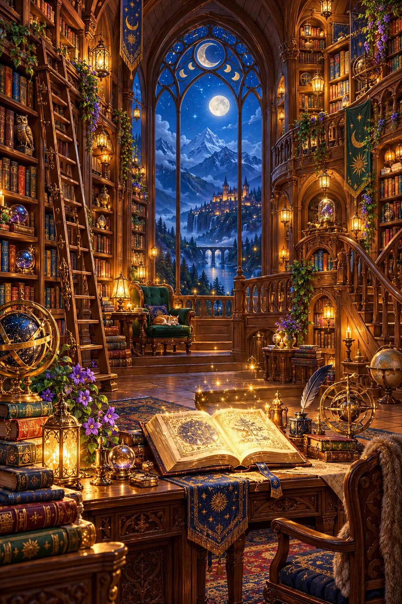
Интерьер · книги · янтарь
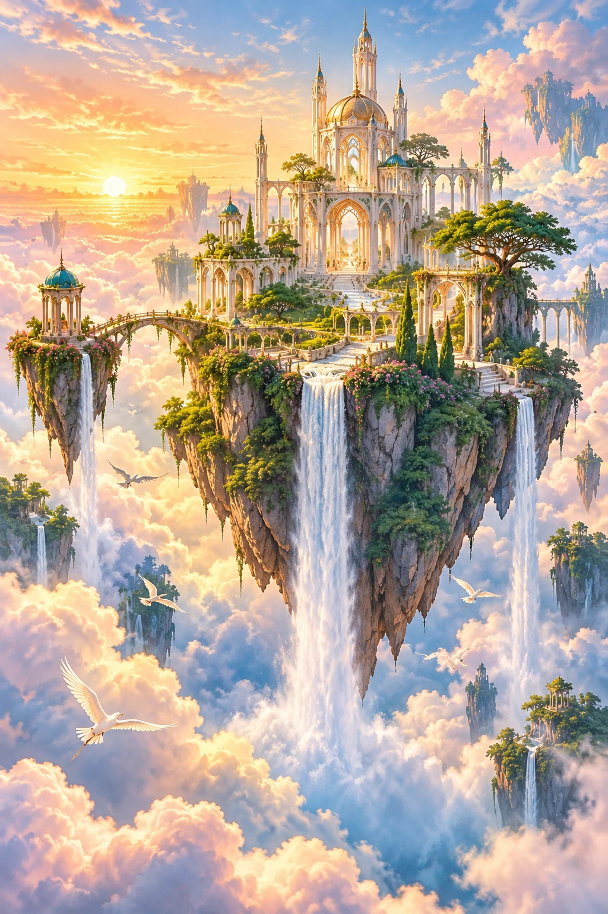
Рассвет · облака · водопады
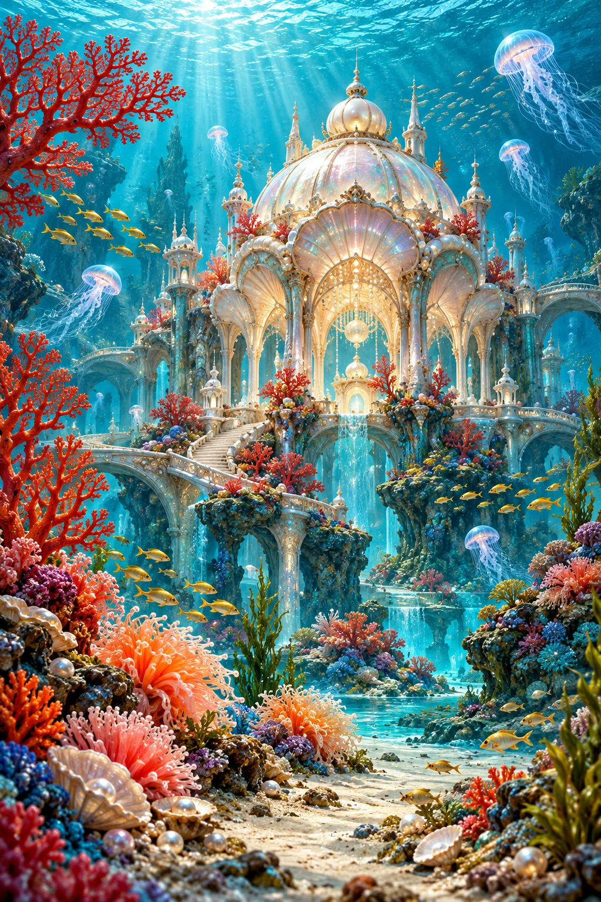
Бирюза · кораллы · глубина
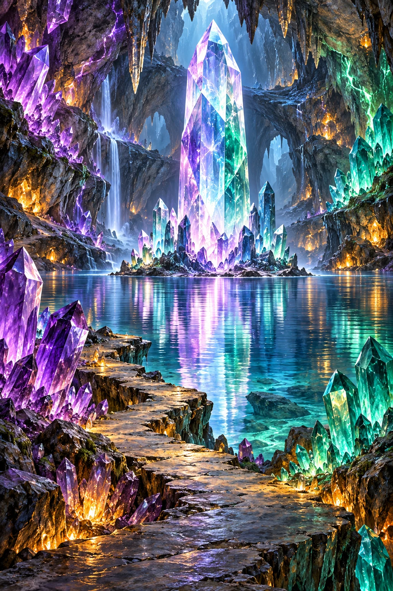
Аметист · кристаллы · озеро
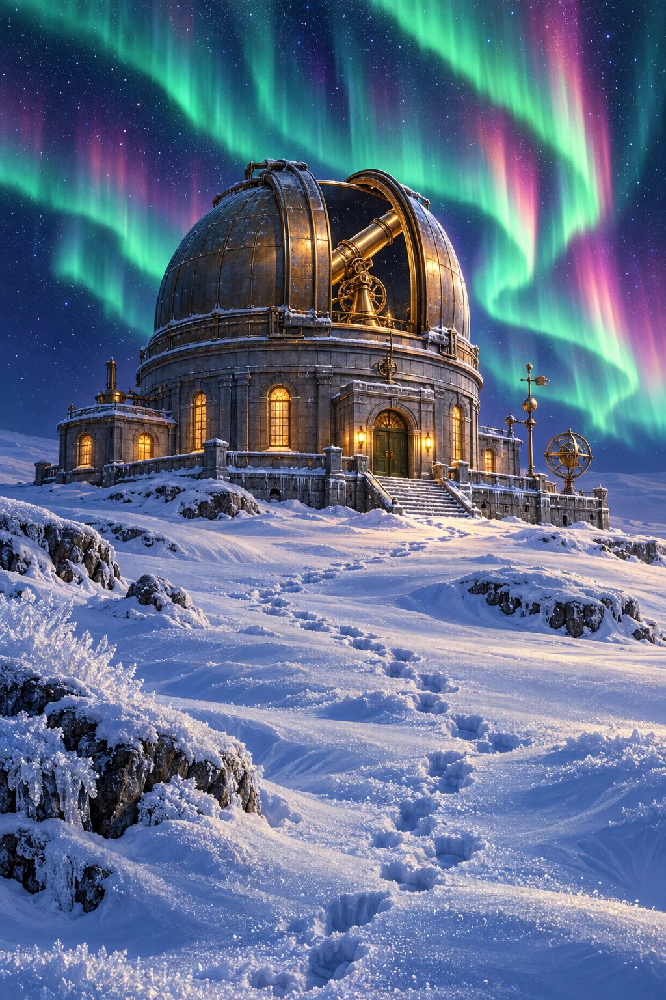
Снег · сияние · телескоп
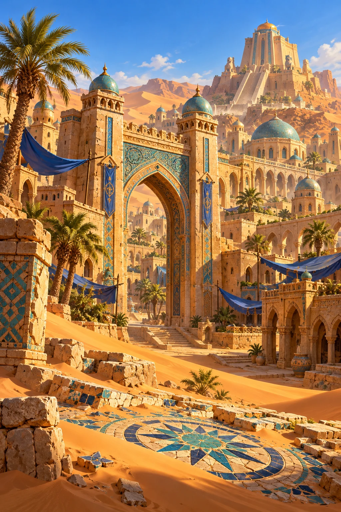
Пустыня · песчаник · бирюза
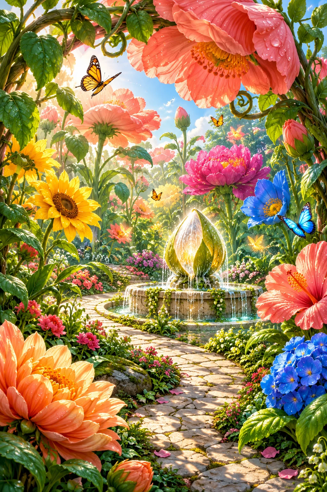
День · цветы · фонтан